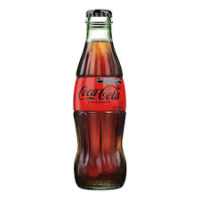

Pozole: caldo tradicional mexicano hecho a base de granos de maíz nixtamalizados,
comúnmente de la variedad cacahuazintle, al que se agregan carnes, verduras y especias muy variadas según la región.
Postre: postre de origen francés elaborado con una natilla teniendo como ingredientes principales yemas de huevos,
un poco de clara a veces, leche entera y azúcar que luego es refrigerado para obtener una textura cremosa y gelatinosa.
Bebida: Refresco
PRECIO: $120